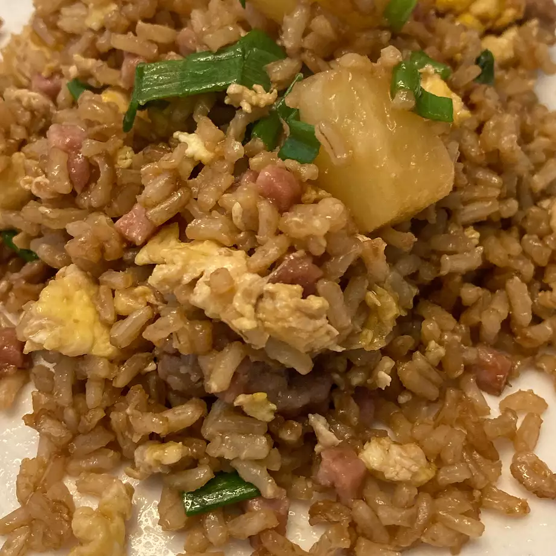

Return Home
Island-Style Fried Rice

This delicious Island-Style Fried Rice recipe was created by a user named "chen" from
the website All Recipes.
I'm not sure why they decided to use such a low quality picture, but hey, the fried rice doesn't look too half bad tbh.
I wish I had my mother's recipe though, I would've love to shown you all that. I could eat that for ages.
Ingredients
So here's what you're gonna need to make this oily looking fried rice:
- 1½ cups uncooked jasmine rice
- 3 cups water
- 2 teaspoons canola oil
- 1 (12 ounce) can fully cooked luncheon meat (such as SPAM®), cubed
- ½ cup sliced Chinese sweet pork sausage (lup cheong)
- 3 eggs, beaten
- 2 tablespoons canola oil
- 1 (8 ounce) can pineapple chunks, drained
- ½ cup chopped green onion
- 3 tablespoons oyster sauce
- ½ teaspoon garlic powder
Steps
Congrats! Now that you got everything, it's time for the magic! Luckily when making fried rice,
nothing has to be precise or accurate as fried rice is naturally a loveable mess! Here we go:
-
Bring the rice and water to a boil in a saucepan over high heat. Reduce heat to
medium-low, cover, and simmer until the rice is tender, and the liquid has been absorbed,
20 to 25 minutes. Let the rice cool completely.
-
Heat 2 teaspoons of oil in a skillet over medium heat, and brown the luncheon meat and sausage.
Set aside, and pour the beaten eggs into the hot skillet. Scramble the eggs, and set aside.
-
Heat 2 tablespoons of oil in a large nonstick skillet over medium heat, and stir in the rice.
Toss the rice with the hot oil until heated through and beginning to brown, about 2 minutes.
Add the garlic powder, toss the rice for 1 more minute to develop the garlic taste, and stir
in the luncheon meat, sausage, scrambled eggs, pineapple, and oyster sauce. Cook and stir until
the oyster sauce coats the rice and other ingredients, 2 to 3 minutes, stir in the green onions,
and serve.